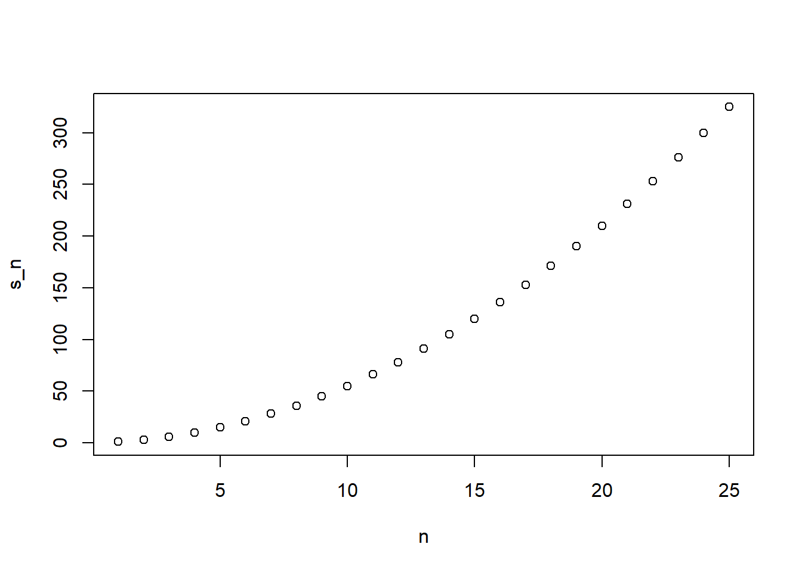

a <- 0
ifelse(a>0, 1/a,NA)[1] NAA related function that is useful is ifelse. This function takes in 3 arguments: a logical and two possible answers.
If the logical is ‘true’, then the value in the second argument is returned.
If the logical is false, then the value in the third argument is returned.
a <- 0
ifelse(a>0, 1/a,NA)[1] NAifelse is useful especially when working with vectors. It examines each entry of the logical vector and returns elements from the vector provided in the second argument, if the entry is true, or elements in from the vector in the third argument if the entry is false.
a <- c(0, 1, 2, -4, 5)
result <- ifelse(a>0, 1/a, NA)
result[1] NA 1.0 0.5 NA 0.2library(dslabs)
data(na_example)
no_nas <- ifelse(is.na(na_example), 0, na_example)
sum(is.na(no_nas))[1] 0Two other useful functions are any and all. The any function takes a vector of logicals and returns TRUE. The all function takes a vector of logicals and returns TRUE if all the entries are TRUE.
z <- c(TRUE,TRUE, FALSE)
any(z)[1] TRUEall(z)[1] FALSEavg <- function(x){
s <- sum(x)
n <- length(x)
s/n
}Note that avg is a function that computes the mean.
x <- 1:100
identical(mean(x), avg(x))[1] TRUEPartial summation Example \(S_n\)
compute_s_n <- function(n){
x <- 1:n
sum(x)
}How can we compute \(S_n\) for various values of \(n\), such as \(n=1,...,15\)?.
for(i in 1:25)
print(i)[1] 1
[1] 2
[1] 3
[1] 4
[1] 5
[1] 6
[1] 7
[1] 8
[1] 9
[1] 10
[1] 11
[1] 12
[1] 13
[1] 14
[1] 15
[1] 16
[1] 17
[1] 18
[1] 19
[1] 20
[1] 21
[1] 22
[1] 23
[1] 24
[1] 25Formula for partial sum of a series is given by \[\frac{n(n+1)}{2}\]
For loops, let us define the range that our variable takes, then change the value and evaluate the expression as we run our loop.
for(i in 1:10)
print(i)[1] 1
[1] 2
[1] 3
[1] 4
[1] 5
[1] 6
[1] 7
[1] 8
[1] 9
[1] 10Here is the for-loop we could write for our \(S_n\) example:
m <- 25
s_n <- vector(length = m) # creating an empty vector
for (n in 1:m){
s_n[n] <- compute_s_n(n)
}In each iteration \(n=1 , n=2, etc\) we compute \(S_n\) and store it in the nth entry of \(S_n\). Now we can create a plot to search for a pattern.
n <- 1:m
plot(n,s_n)
Vectorization over loops shortens and clears up your code. A vectorized function is a function that will apply the same operation on each vectors.
x <- 1:10
sqrt(x) [1] 1.000000 1.414214 1.732051 2.000000 2.236068 2.449490 2.645751 2.828427
[9] 3.000000 3.162278y <- 1:10
x*y [1] 1 4 9 16 25 36 49 64 81 100Not all functions work this way. For example, let’s consider comupte_s_n: This function does not work element wise, because it is expecting a scalar. This piece of code does not run the function on each entry of n.
n <- 1:25
compute_s_n(n) #outputs a warning that only first element is calculated[1] 1Functionals are functions that help us apply the same function to each entry in a vector, matrix, data frame or a list. Here, we cover the function that operates on a numeric, logical and character vectors
THe function that will utilize that can accomplish this is called sapply (“s-apply”). This function permits us to perform element-wise operations on any function.
x <- 1:10
sapply(x,sqrt) [1] 1.000000 1.414214 1.732051 2.000000 2.236068 2.449490 2.645751 2.828427
[9] 3.000000 3.162278Each element of x is passed on to the function sqrt and the result is returned. These results are concatenated. In this case, the result is a vector of the same length as the original x. Therefore, the for-loop above can be written as:
n <- 1:25
s_n <- sapply(n,compute_s_n)(Other functionals:)apply, lapply, tapply, mapply, vapply, and replicate. The main ones we are going to use are sapply, apply, and replicate.